library(dplyr)
library(ggdist)
library(ggplot2)
library(tidybayes)
url <- paste0(
"https://raw.githubusercontent.com/estadisticaunr/",
"estadistica-bayesiana/main/datos/fish-market-posterior.csv"
)
df_posterior <- readr::read_csv(url)11 - El peso de los pescados
El siguiente programa muestra como se puede resolver en R el ejercicio El peso de los pescados de la Práctica 3.
# Posterior marginal: intercepto
ggplot(df_posterior) +
geom_histogram(aes(x = intercepto))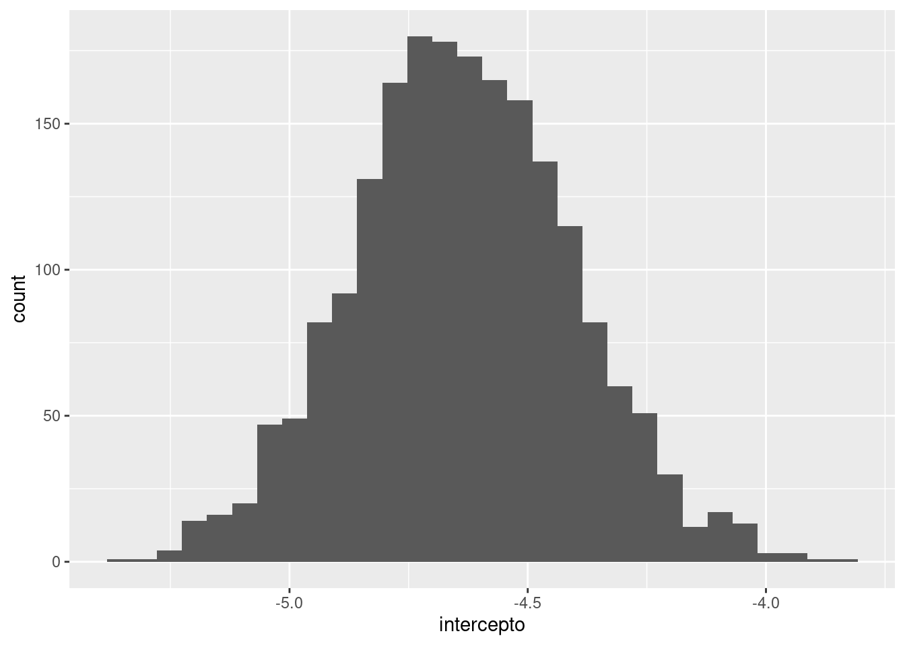
# Posterior marginal: pendiente
ggplot(df_posterior) +
geom_histogram(aes(x = pendiente))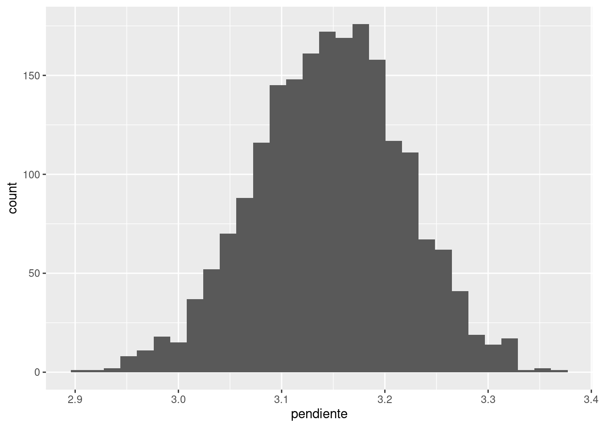
ggplot(df_posterior) +
geom_histogram(aes(x = 1.01^pendiente))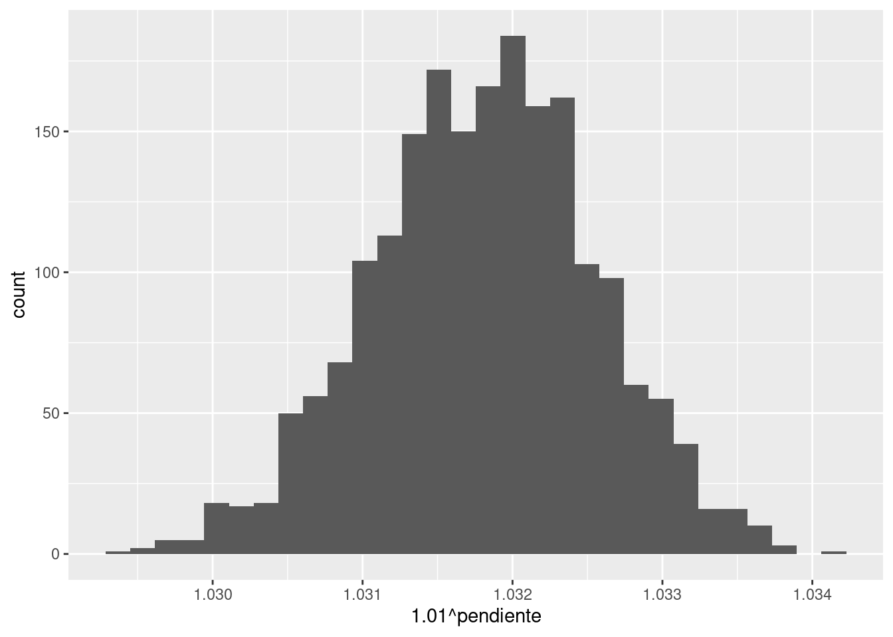
# Posterior marginal: sigma
ggplot(df_posterior) +
geom_histogram(aes(x = sigma))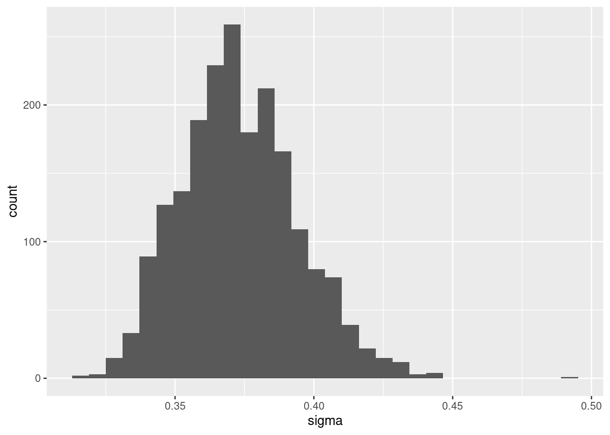
# Posterior conjunto
ggplot(df_posterior) +
geom_point(aes(x = intercepto, y = pendiente))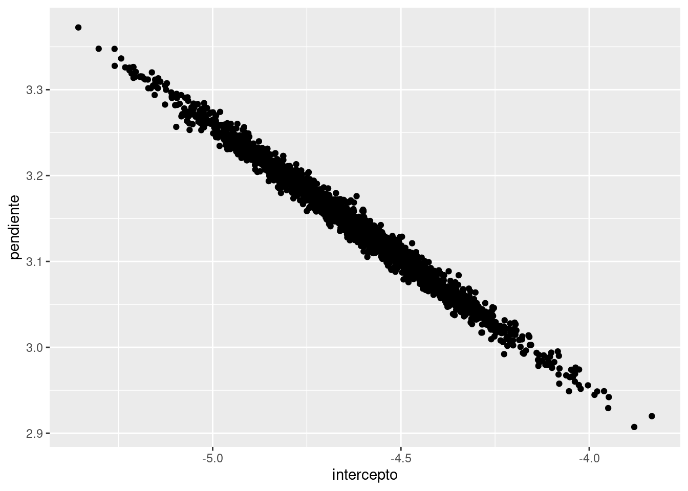
Consideremos un pescado de \(L = 30\text{ cm}\).
\(\mu\) depende de \(\beta_0\) y \(\beta_1\) y por lo tanto tiene una distribución a posteriori.
Largo <- 30
1df_posterior$log_Peso_30_prom <- df_posterior$intercepto + df_posterior$pendiente * log(Largo)
2df_posterior$Peso_30_prom <- exp(df_posterior$log_Peso_30_prom)
ggplot(df_posterior) +
geom_histogram(aes(x = Peso_30_prom)) +
labs(x = "Peso promedio (gramos)", y = "Frecuencia")- 1
- Peso promedio en escala logarítmica (log-gramos)
- 2
- Peso promedio en escala lineal (gramos)
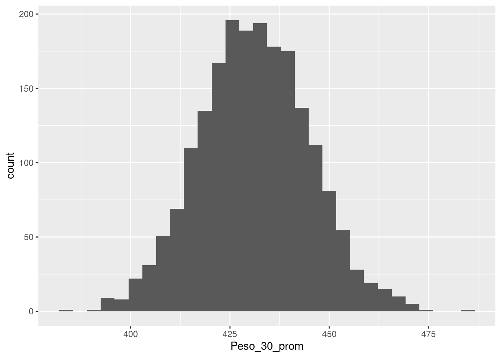
¿Cómo obtenemos la distribución predictiva a posteriori?
df_posterior$log_Peso_30 <- rnorm(
n = nrow(df_posterior),
mean = df_posterior$log_Peso_30_prom,
sd = df_posterior$sigma
)
df_posterior$Peso_30 <- exp(df_posterior$log_Peso_30)
ggplot(df_posterior) +
geom_histogram(aes(x = Peso_30)) +
labs(x = "Peso (gramos)", y = "Frecuencia")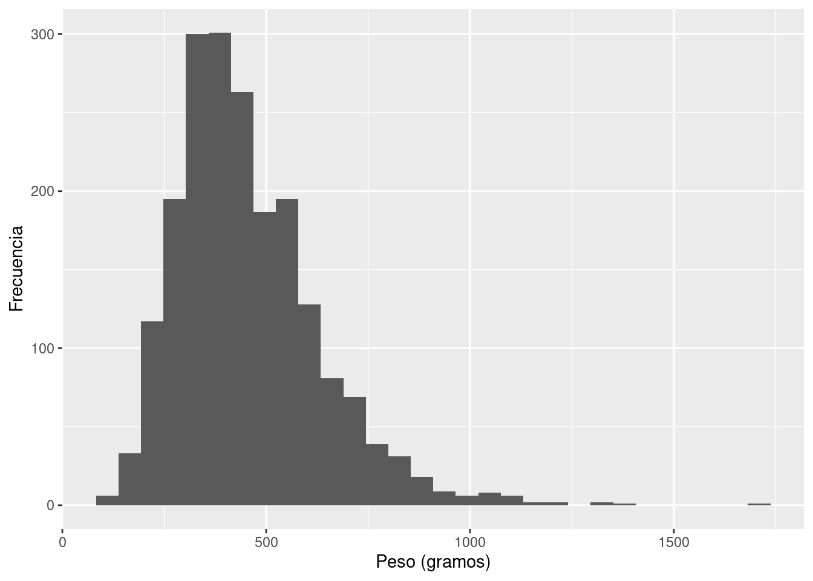
¿Cómo graficamos la recta de regresión?
log_largo <- seq(1.5, 4.1, length.out = 100)
calc_log_peso_prom <- function(x, posterior) {
return(posterior$intercepto + posterior$pendiente * x)
}
log_peso_prom <- sapply(log_largo, calc_log_peso_prom, df_posterior)
dim(log_peso_prom)[1] 2000 100log_peso_prom_new <-
1 as.data.frame(t(log_peso_prom[200:299,])) |>
2 setNames(paste0("rep", 1:100)) |>
3 cbind(log_largo) |>
4 tidyr::pivot_longer(cols = -log_largo, names_to = "rep", values_to = "value")
ggplot(log_peso_prom_new) +
geom_line(aes(x = log_largo, y = value, group = rep), alpha = 0.3) +
labs(x = "log(largo)", y = "Media de log(peso)")- 1
- Selecciono 100 muestras
- 2
- Renombro las columnas
- 3
- Agrego el predictor
- 4
- Convierto a formato largo para graficar
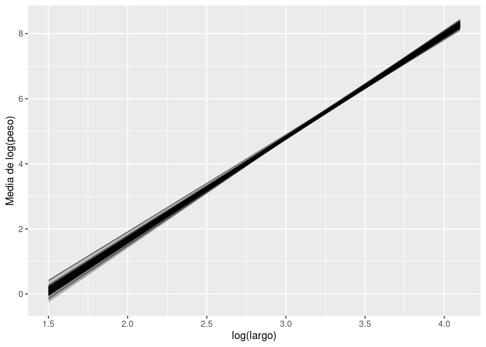
ggplot(log_peso_prom_new) +
geom_line(aes(x = exp(log_largo), y = exp(value), group = rep), alpha = 0.3) +
labs(x = "Largo (centímetros)", y = "Peso medio (gramos)")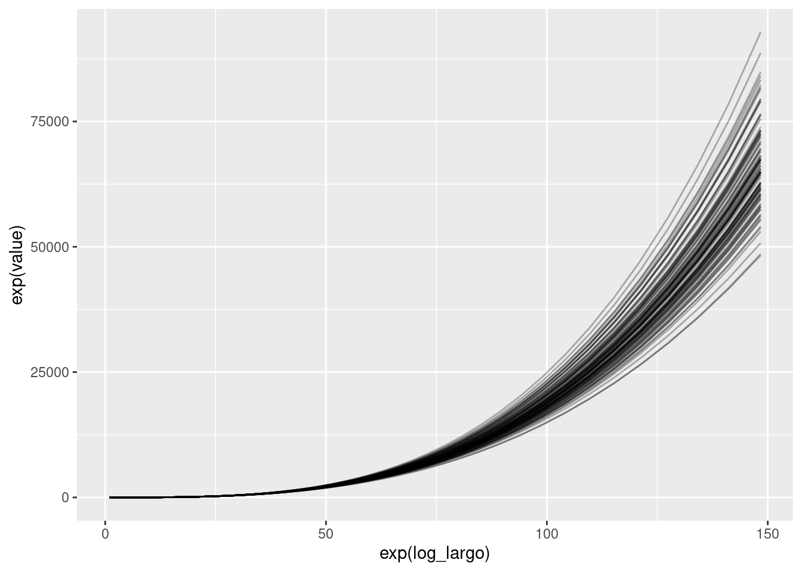
log_peso_prom_new_group <-
log_peso_prom_new |>
group_by(log_largo) |>
summarise(q05 = quantile(value,0.05),
mean = mean(value),
q95 = quantile(value,0.95)) log_peso_prom_new_group |>
ggplot() +
geom_ribbon(aes(x = log_largo, ymin = q05, ymax = q95), fill = "gray50") +
geom_line(aes(x = log_largo, y = mean)) +
labs(x = "log(largo)", y = "Media de log(peso)")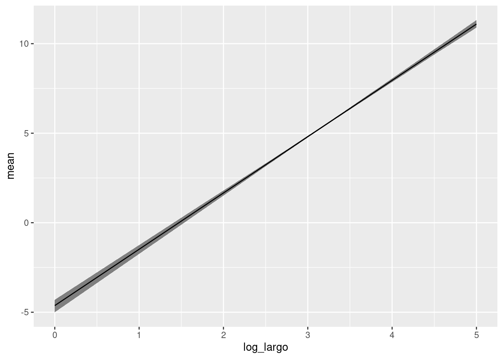
log_peso_prom_new_group |>
ggplot() +
geom_ribbon(aes(x = exp(log_largo), ymin = exp(q05), ymax = exp(q95)), fill = "gray50") +
geom_line(aes(x = exp(log_largo), y = exp(mean))) +
labs(x = "Largo (centímetros)", y = "Peso medio (gramos)")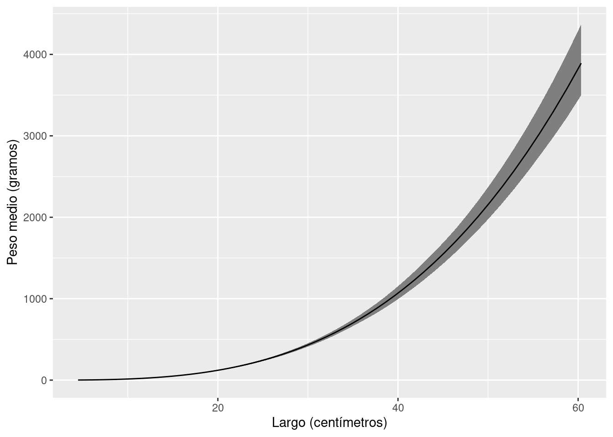
log_peso_prom_new |>
group_by(log_largo) |>
mean_hdi(value, .width = c(.50, .70, .90),) |> # resumo la distribución a posteriori con media y hdi
ggplot(aes(x = log_largo, y = value, ymin = .lower, ymax = .upper)) +
geom_lineribbon(linewidth = 0.8) +
scale_fill_brewer() +
labs(x = "log(largo)", y = "Media de log(peso)")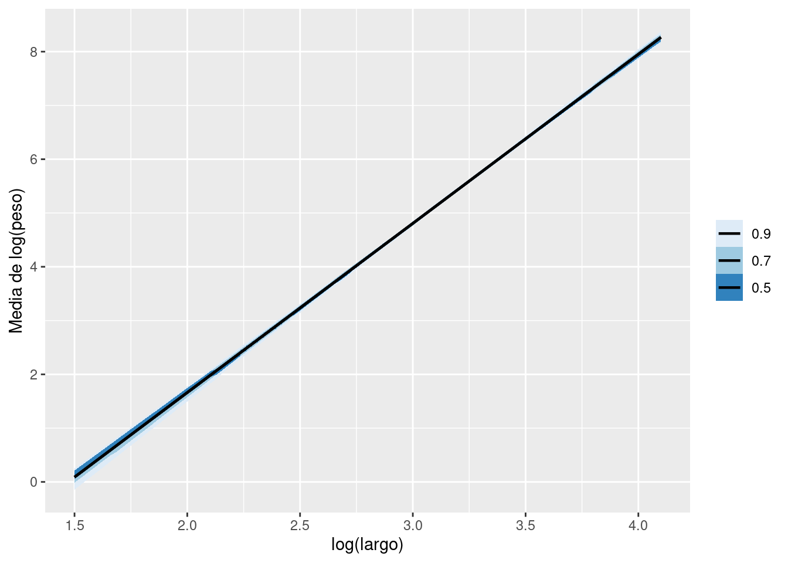
log_peso_prom_new |>
group_by(exp_log_largo = exp(log_largo)) |>
mean_hdi(exp_value = exp(value), .width = c(0.50, 0.70, 0.90),) |>
ggplot(aes(x = exp_log_largo, y = exp_value, ymin = .lower, ymax = .upper)) +
geom_lineribbon(linewidth = 0.8) +
scale_fill_brewer() +
labs(x = "log(largo)", y = "Media de log(peso)")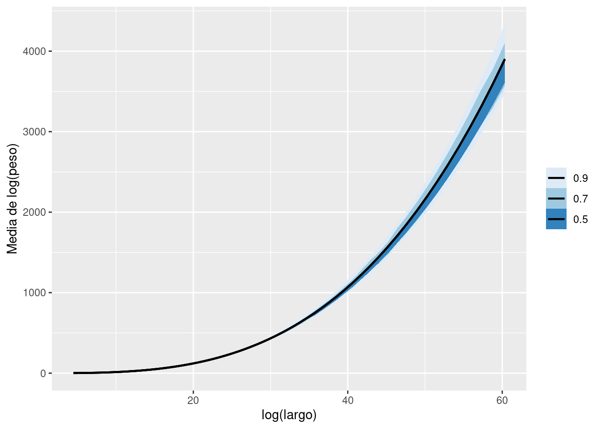
Mismos gráficos para la distribución predictiva a posteriori
pred_log_peso <- function(x, posterior) {
return(rnorm(n = nrow(posterior), mean = posterior$intercepto + posterior$pendiente * x, sd = posterior$sigma))
}
log_peso <- sapply(log_largo, pred_log_peso, df_posterior)
log_peso_new <-
as.data.frame(t(log_peso[500:699, ])) |>
setNames(paste0("rep", 1:200)) |>
cbind(log_largo) |>
tidyr::pivot_longer(cols = -log_largo, names_to = "rep", values_to = "value")
log_peso_new_group <-
log_peso_new |>
group_by(log_largo) |>
summarise(q05 = quantile(value,0.05),
mean = mean(value),
q95 = quantile(value,0.95)) log_peso_new_group |>
ggplot() +
geom_ribbon(aes(x = log_largo, ymin = q05, ymax = q95), fill = "gray50") +
geom_line(aes(x = log_largo, y = mean)) +
labs(x = "log(largo)", y = "log(peso)")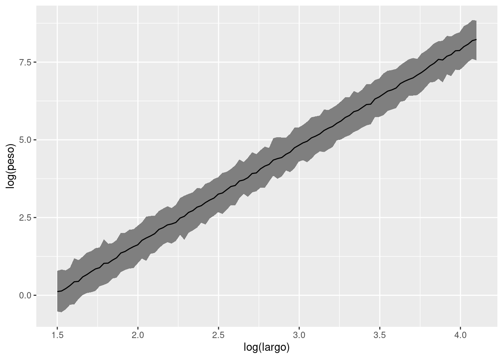
log_peso_new_group |>
ggplot() +
geom_ribbon(aes(x = exp(log_largo), ymin = exp(q05), ymax = exp(q95)), fill = "gray50") +
geom_line(aes(x = exp(log_largo), y = exp(mean))) +
labs(x = "Largo (centímetros)", y = "Peso (gramos)")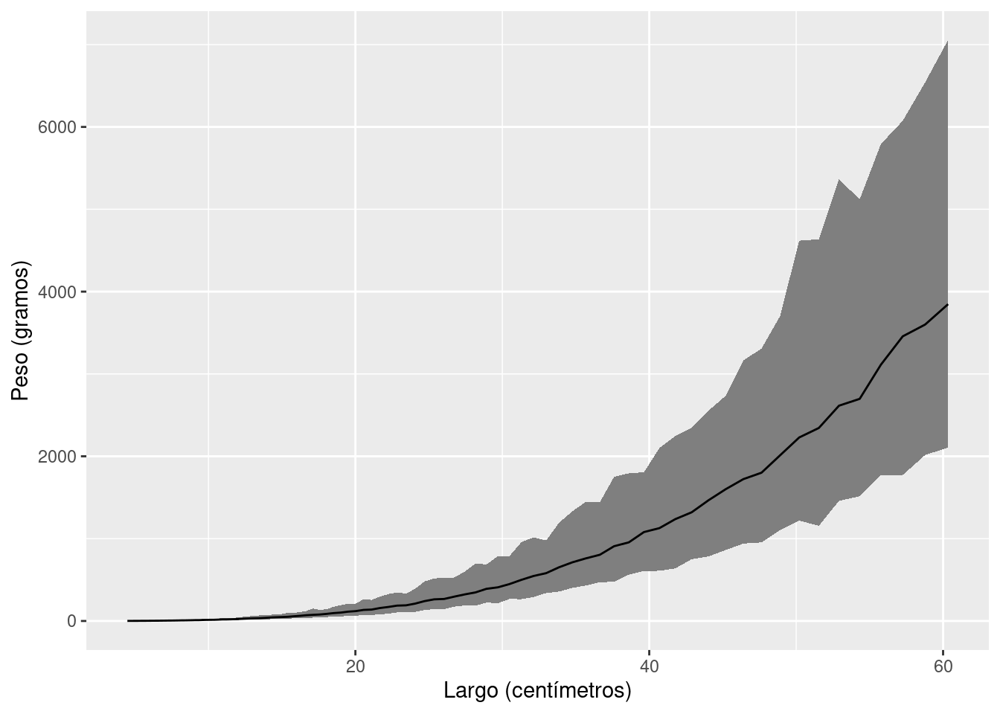